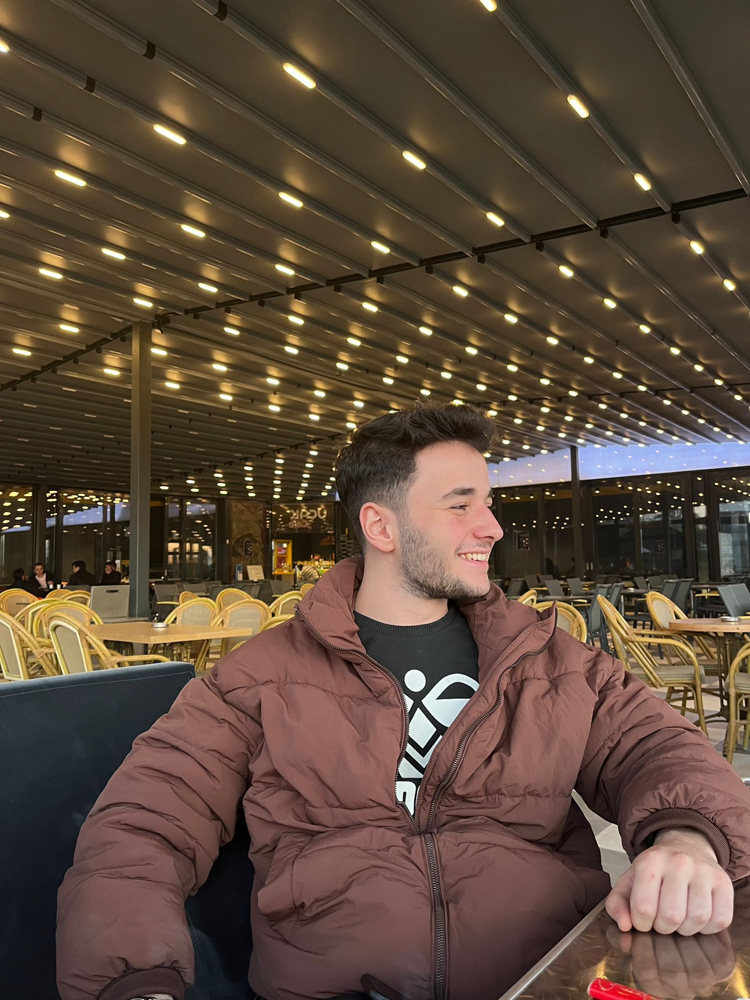

Merhabalar ben Halil Erdem Üngör, 02.10.2002 tarihinde Tokat doğumluyum. 2020 yılında Bakırçay Üniversitesi Bilgisayar Mühendisliğini okul birinciliği ile kazandım.
Kendimi yazılım sektöründe geliştirmeye heycan duyuyor aynı zamanda fazlasıyla seviyorum.